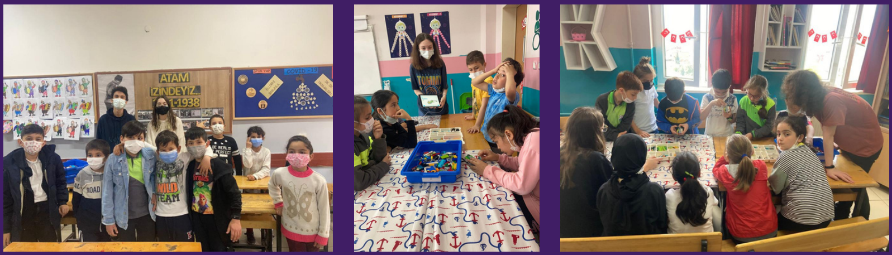
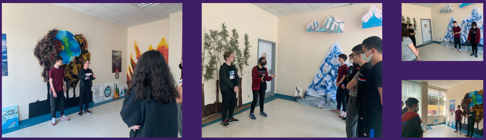

SOSYAL SORUMLULUK
Ekibimiz çeşitli alanlarda sosyal sorumluluk projeleri yapmaktadır.
STEM+A ŞENLİĞİ
STEM+A şenliğini bizim organize edeceğimiz bir fuar alanında düzenleyeceğiz. Çocukların buraya ulaşımını sağlayıp, koordine edeceğiz. Şenliğin içerisinde STEM+A dallarında çalışma yapan firmaların stantlarına yer verilecek, stantlarda firmalar yaptıkları çalışmaları çocuklara tanıtmanın yanı sıra STEM+A dallarını anlatacak, deneyler yaptırıp onların eğlenerek öğrenmesini ve bakış açılarını genişletmelerini sağlayacaklar. Stantlar haricinde çocuklara konuklarımız tarafından yapılacak konuşmaları dinleyip kendilerini geliştirmeleri için imkan sunacağız. Şenliğin asıl amacı ise imkanı olmayan çocukları STEM+A dallarıyla buluşturmak, bu dalları keşfederken eğlenmelerini ve sevmelerini sağlamaktır.
PENCERE PROJESİ
Pencere projesi kapsamında her hafta pazartesi günleri çevremizdeki bir köy okuluna gidiyoruz. Gittiğimiz okulda çocuklara STEM+A ve WeDo 2.0 eğitimleri veriyoruz. Çocuklara hem daha önce deneyimleyemedikleri ve olanaklarının yetmediği aktivite ve dalları gösterip onların geleceğe olan bakış açılarını genişletmeye çalışıyoruz.

TFT MEETS
Yakın bölgedeki FRC takımlarını Gebze Kültür ve Sanat Merkezi'nde toplayacağız. Burada takımların tanışıp yardımlaşabileceği ve ortaklaşa rekabet ilkesini en iyi şekilde uygulayabilecekleri bir alan yaratmayı amaçlıyoruz. Bu alanda mentörler, takım kaptanları, sponsorlar ve diğer konuşmacılar FRC ruhunu yansıtarak bu süreçte takımlara yardım edecek konuşmalar yapacaklar.
İKLİM MÜZESİ
İklim müzesi, okulumuzu gezmeye gelen 8. sınıf öğrencilerine iklim krizinin önemini ve bu konuda yapılması gerekenleri anlattığımız ayrıca orada geçirdikleri süre boyunca eğlenirken öğrenmelerini hedeflediğimiz bir projedir. Müze, resim öğretmenlerimiz eşliğinde takım üyelerimiz tarafından yapılmıştır. Bunun yanı sıra müze içerisinde yaptığımız sunumlar ve çocuklara oynattığımız Kahoot da bizler tarafından hazırlanmıştır.
